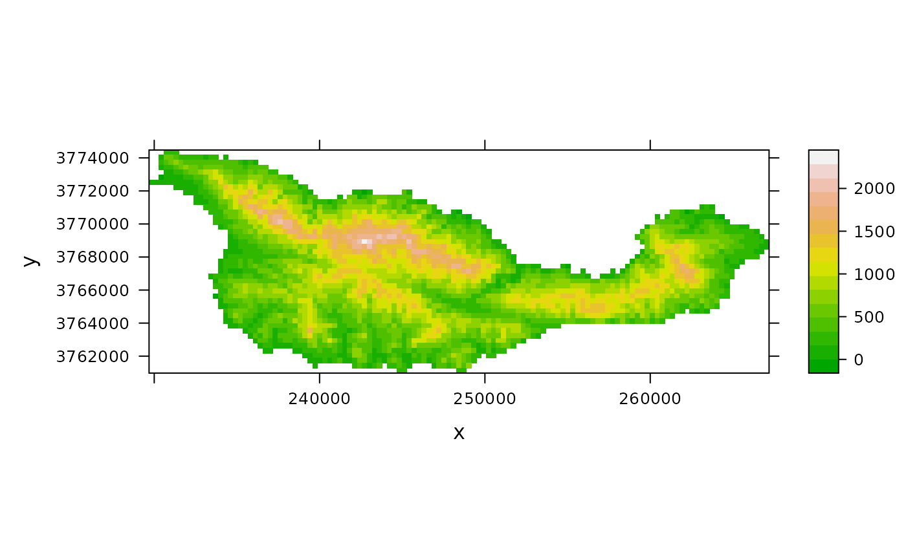

cruz.RdSpatially-referenced elevation, forest cover, and vegetation data for Santa Cruz Island.
data(cruz)
A data frame with 2787 observations on the following 5 variables.
xEasting (meters)
yNorthing (meters)
elevationa numeric vector, FEET (multiply by 0.3048 to convert to meters)
foresta numeric vector, proportion cover
chaparrala numeric vector, proportion cover
The resolution is 300x300 meters.
The Coordinate system is EPSG number 26911
NAD_1983_UTM_Zone_11N Projection: Transverse_Mercator False_Easting: 500000.000000 False_Northing: 0.000000 Central_Meridian: -117.000000 Scale_Factor: 0.999600 Latitude_Of_Origin: 0.000000 Linear Unit: Meter GCS_North_American_1983 Datum: D_North_American_1983
Brian Cohen of the Nature Conservancy helped prepare the data
Sillett, S. and Chandler, R.B. and Royle, J.A. and Kery, M. and Morrison, S.A. In Press. Hierarchical distance sampling models to estimate population size and habitat-specific abundance of an island endemic. Ecological Applications
#> 'data.frame': 2787 obs. of 5 variables: #> $ x : num 230737 231037 231337 230437 230737 ... #> $ y : num 3774324 3774324 3774324 3774024 3774024 ... #> $ elevation: int 241 323 277 13 590 533 378 329 265 282 ... #> $ forest : num 0 0 0 0 0 0 0 0 0 0 ... #> $ chaparral: num 0 0 0 0 0 0 0 0.02 0.01 0.02 ...if(require(raster)) { elev <- rasterFromXYZ(cruz[,1:3], crs="+proj=utm +zone=11 +ellps=GRS80 +datum=NAD83 +units=m +no_defs") elev plot(elev) }#>#>#> #>#> #> #>#> #>#> #> #>